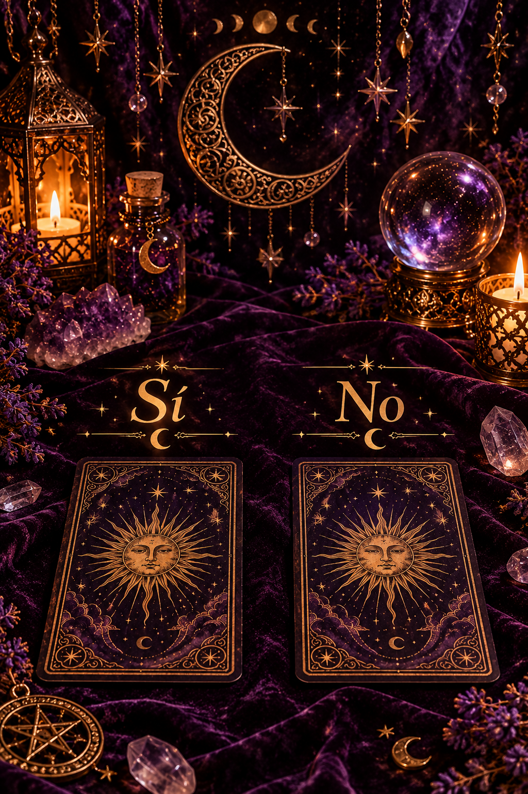

Tarot Sí o no
Esta consulta de tarot es para una sola pregunta concreta. Haré una tirada de cartas y te enviaré una foto de la tirada junto con tu respuesta, que será únicamente «sí» o «no». El plazo de respuesta es de 24 a 48 horas.
3€
Esta consulta de tarot es para una sola pregunta concreta. Haré una tirada de cartas y te enviaré una foto de la tirada junto con tu respuesta, que será únicamente «sí» o «no». El plazo de respuesta es de 24 a 48 horas.
3€Esta consulta es para una sola pregunta concreta. Te enviaré una foto de la tirada y un audio con una respuesta más detallada en lo que muestran las cartas sobre tu situación. El plazo de respuesta es de 24 a 48 horas.
6€En esta tirada exploraremos qué piensa la persona que amas sobre ti y vuestra relación, qué siente por ti y qué pasos podría dar. También te contaré cómo podría evolucionar vuestra relación durante los próximos 6 a 8 meses, según lo que muestren las cartas.
Te enviaré una foto de la tirada y un audio con la interpretación completa. El plazo de respuesta es de 24 a 48 horas.
10€Puedes elegir entre una llamada telefónica o una videollamada. Durante la consulta podrás hacerme varias preguntas sobre lo que te preocupa o sobre cualquier tema que quieras consultar. Puedes seguir haciendo preguntas hasta que se cumplan los 15 minutos.
Disponible con reserva previa a través de la web.
20€Esta llamada es para preguntas específicas sobre un tema, no para una lectura general. Si nos queda tiempo, podrás hacer otras preguntas hasta completar los 30 minutos.
Disponible con reserva previa a través de la web.
30€